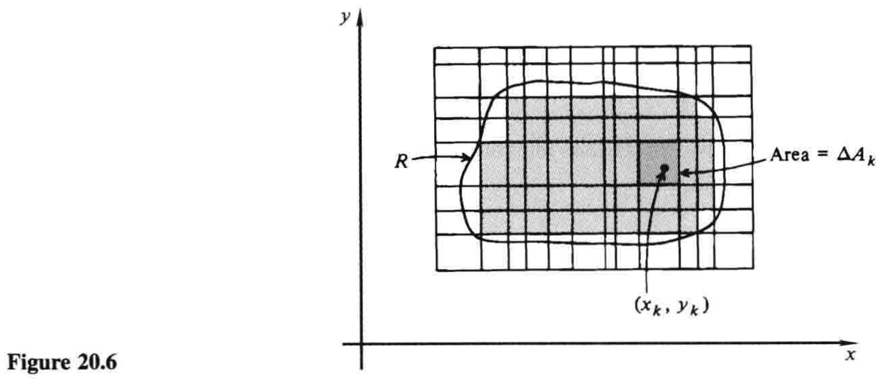
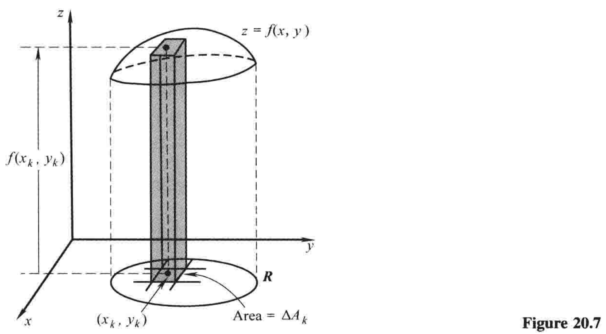
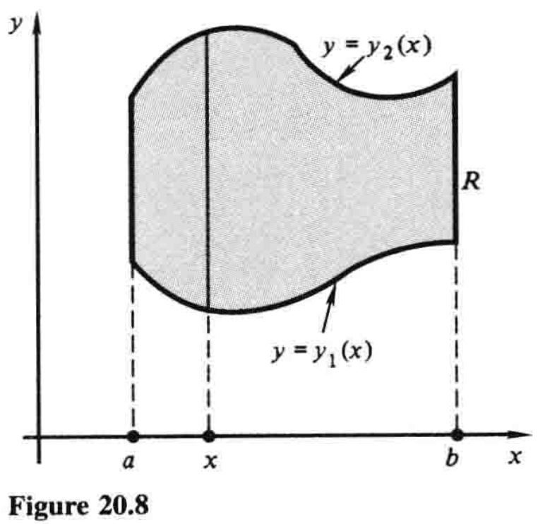
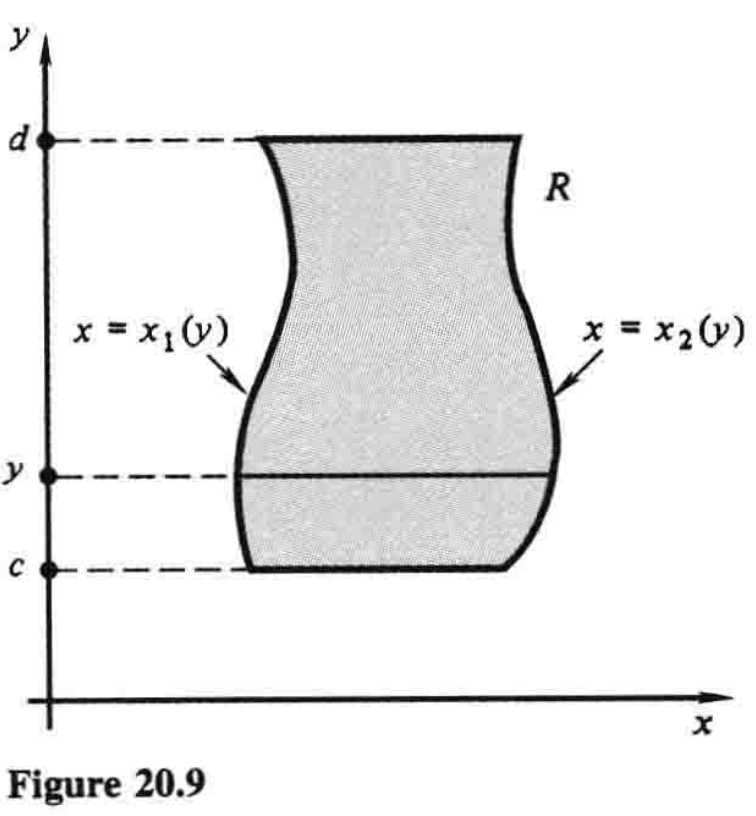
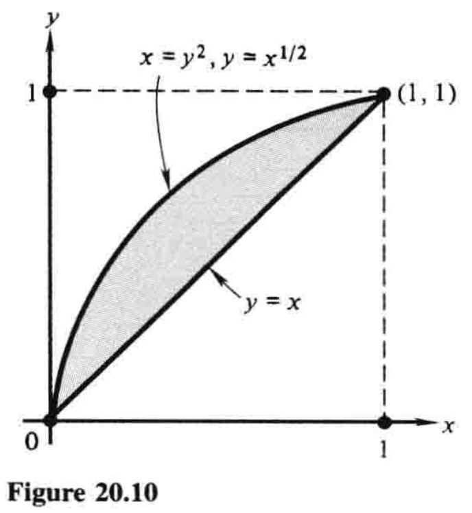
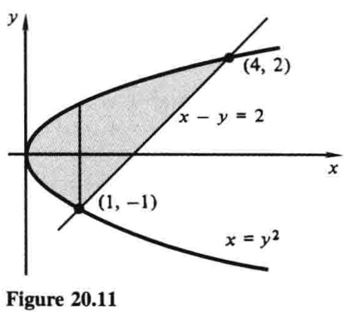
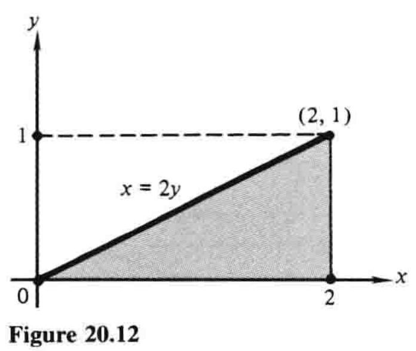

20.2 二重积分和累次积分¶
二元函数的二重积分，是一元函数定积分在二维中的对应概念. 方便起见，这里把一元函数积分称为单积分，与概念二重积分相对.
我们知道，单积分\(\int_a^b f(x)\,dx\)的值取决于函数\(f(x)\)和区间\([a,b]\). 在二重积分的情形中，区间\([a,b]\)被替代为\(xy\)平面中的区域\(R\). \(f(x,y)\)在\(R\)上的二重积分记作
后文将会解释记号\(dA\)的含义.
我们回忆一下，在6.4节中，单积分被定义为特定求和的极限. 我们现在用基本相同的方式定义二重积分\((1)\).
设想一个定义在\(xy\)平面内一区域\(R\)上的连续函数\(f(x,y)\). 有必要假定\(R\)是有界的，这样一来，它就可以被一个充分大的矩形所包含，并且在任何方向上都不会趋于无穷；否则，正如单积分中\(a\)或\(b\)趋于无穷的情形那样，二重积分将会是反常的.
我们着手用平行于坐标轴的网格线覆盖\(R\)，如图20.6所示，其中相邻平行线之间的距离可以相等，也可以不等. 这些直线把平面分成许多小矩形. 有些矩形可能部分或全部逸出\(R\)外，这些我们忽略. 其他的矩形则整个位于\(R\)内，如果它们总共有\(n\)个——我们假设至少有一个——那么我们用任意顺序给它们标号为\(1\)到\(n\)，并记第\(k\)个矩形的面积为\(\Delta A_k\). 现在我们在第\(k\)个矩形中选择任意一点\((x_k,y_k)\)，写出求和式

最后，想象越来越多的平行线被加进来形成网格，把已有的矩形分成更小的矩形，并考虑与这个分区更精细的平面相对应的求和\((2)\). 如果当\(n\)趋于无穷且矩形的最大对角线（即所有矩形中最长的对角线）趋于零——无关于分割线和矩形内点\((x_k,y_k)\)的选法——求和趋于一个特定的极限，那么二重积分\((1)\)就定义为以下极限：
目前看来，定义\((3)\)与相应的单积分定义相比区别不大. 然而在二维中，存在某些不会出现在一维中的技术困难. 至少平面区域比区间\([a,b]\)复杂多了. 不过，在足够通用的假设下，可以严格证明二重积分的存在. 具体而言，假设我们所考虑的区域包含其边界，而且这些边界由有限个光滑曲线构成，则已然足够.
我们不应该想着把二重积分搞得特别理论化. 这是个难题，最好留待高级微积分课程去研究.1 相反，我们希望强调二重积分的直观意义，并集中关注其几何和物理应用.
作为该观点的一个示范，设\(z=f(x,y)\)是\(xyz\)空间中一曲面的方程，其位于区域\(R\)的上面，因此在\(R\)上\(f(x,y) \gt 0\)，如图20.7. 那么\(f(x_k,y_k)\Delta A_k\)大致就是图中小柱体的体积（高乘以底面积）；和式\((2)\)就是许多这种体积的和，因此也大致是曲面下立体的总体积；而极限\((3)\)，即二重积分
则给出了立体的精确体积.2

显然，若\(f(x,y)\)为常数，即\(f(x,y)=c\)，那么
其中\(A\)是区域\(R\)的面积. 特别地，若\(f(x,y)=1\)，则有
我们也指出，在定义\((3)\)中，并没有要求\(f(x,y)\)必须为正. 如果\(f(x,y)\)既可为正也可为负，那么二重积分表示一个代数体积3，而不是几何体积；即\(z=f(x,y)\)和\(xy\)平面之间的体积当\(f(x,y) \gt 0\)时为正，当\(f(x,y) \lt 0\)时为负.
由于各边平行于坐标轴的矩形的面积可被写成\(\Delta A=\Delta x \Delta y\)，使用
作为二重积分\((1)\)的替代记号，则是合理的. 这种形式下，二重积分类似于一个累次积分，而且事实上，我们稍后会解释，当区域\(R\)满足某种简单的形状时，二重积分\((1)\)总等于一个选择恰当的累次积分. 这种等价性经常误导学生认为二重积分大致跟累次积分相同，实则不然. 我们下面细说这两种积分的区别.
一个区域\(R\)称为竖直简单的，当它能被描述为不等式
的形式，其中\(y=y_1(x)\)和\(y=y_2(x)\)是\([a,b]\)上的连续函数. 这种区域如图20.8所示. 类似地，一个区域\(R\)称为水平简单的，当它能被描述为不等式
的形式，其中\(x=x_1(y)\)和\(x=x_2(y)\)是\([c,d]\)上的连续函数. 图20.9中的区域具有这种性质.


下面是关于使用累次积分来计算二重积分的基本事实：若\(R\)为\((5)\)给出的竖直简单区域，那么
又若\(R\)为\((6)\)给出的水平简单区域，那么
除了其在计算二重积分方面显而易见的实践价值以外，这些等式还服务于澄清二重积分和累次积分之间的概念差异. 二重积分是与函数\(f(x,y)\)和区域\(R\)相关联的一个数，而这个数的存在和意义独立于任何特定的计算方法. 另一方面，一个累次积分就是自带一套计算流程的二重积分. 因此，每个累次积分都是二重积分，反之则不然.
例1 用两种不同的方法计算二重积分\(\iint_R 2xy\,dA\)，其中\(R\)是由抛物线\(x=y^2\)和直线\(y=x\)围成的区域.
解 每次解二重积分前，画出积分区域\(R\)是很有必要的. 此题中，区域如图20.10所示. 显然\(R\)是竖直简单的，其中\(a=0\)，\(b=1\)，\(y_1(x)=x\)，\(y_2(x)=x^{1/2}\)，因此由\((7)\)得
区域\(R\)同样也是水平简单的，其中\(c=0\)，\(d=1\)，\(x_1(y)=y^2\)，\(x_2(y)=y\)，因此由\((8)\)得

例2 求\(\iint_R (1+2x)\,dA\)，其中\(R\)是由\(x=y^2\)和\(x-y=2\)围成的区域.
解 此区域如图20.11. 若要先对\(y\)积分，再对\(x\)积分，我们需要计算两个不同的积分，一个位于直线\(x=1\)左边，一个在右边，因为对\(y\)积分的积分限在这两块区域是不同的：
另一种顺序则更简单，可得

例2说明，即便区域\(R\)既竖直简单又水平简单，用一个顺序积分也可能比另一个顺序更容易，我们自然是希望做得越容易越好. 有时积分顺序的选择取决于被积函数\(f(x,y)\)的特性，因为或许用某种顺序计算积分很难甚至不可能，但是如果顺序反过来就好做多了.
例3 求
解 我们不能用这种顺序积分，因为\(\int e^{x^2}\,dx\)并非初等函数. 因此我们尝试别的顺序. 这需要我们根据给定累次积分的积分限画出区域\(R\). \(R\)如图20.12，在另一种顺序下，上述二重积分的值为
